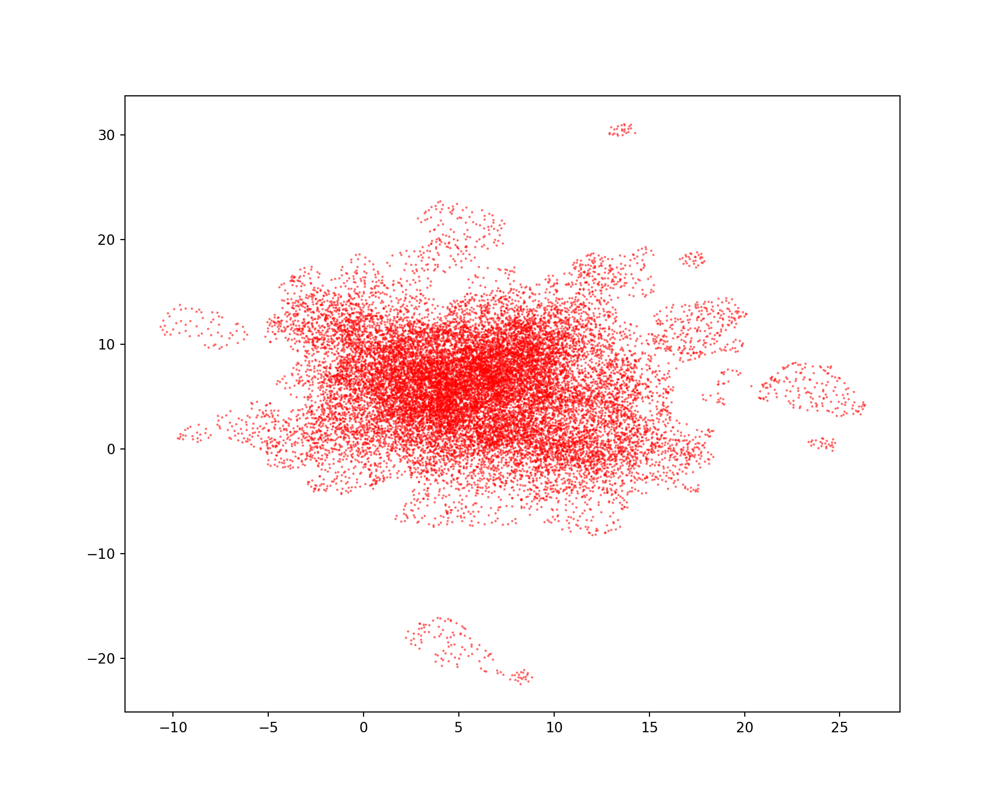
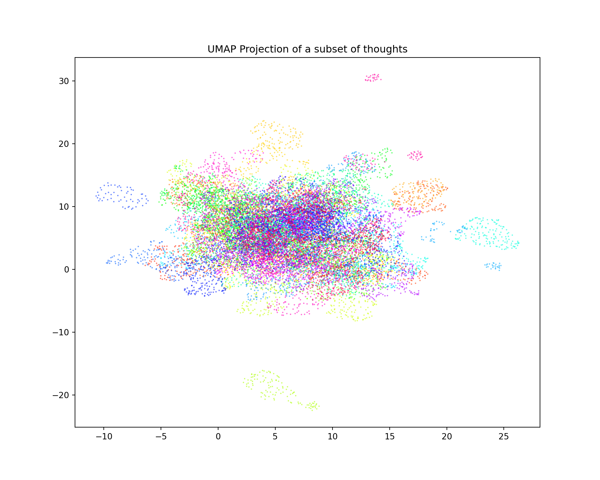
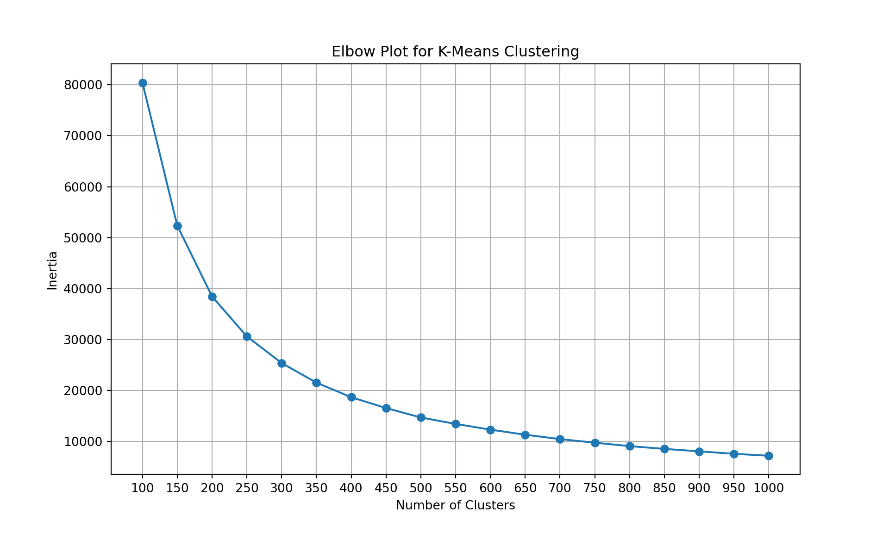
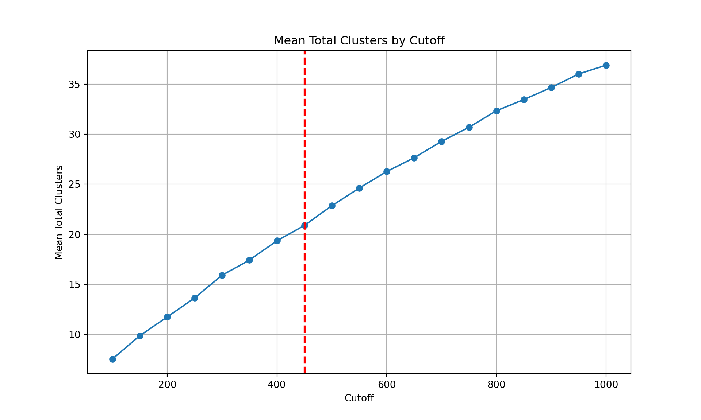
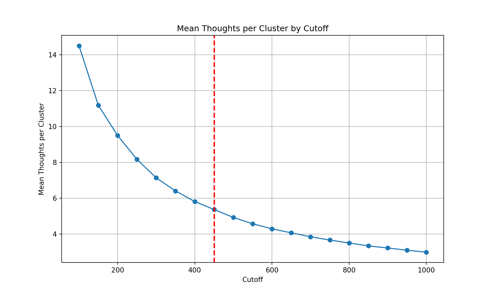
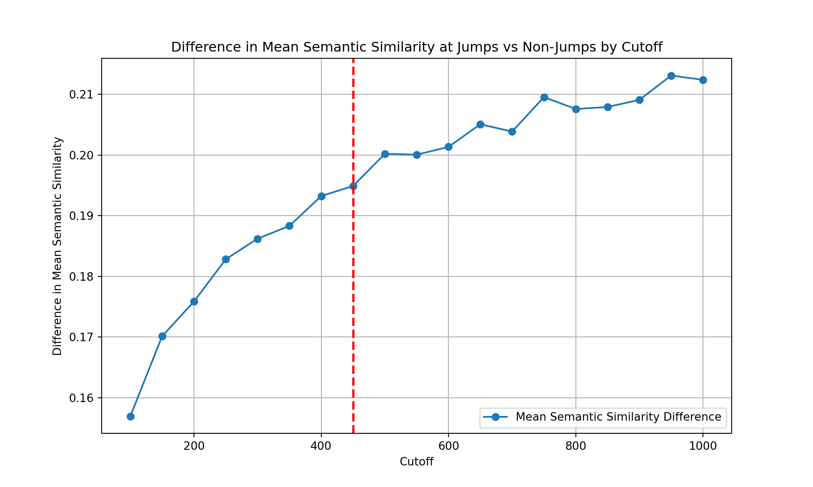
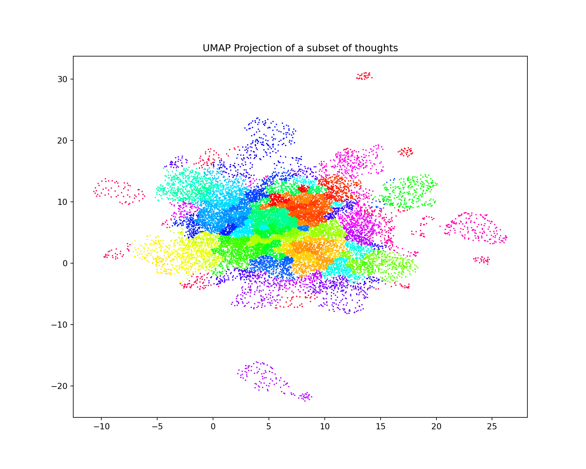

import pandas as pd
from sentence_transformers import SentenceTransformer
import numpy as np
from scipy.cluster.hierarchy import linkage, fcluster
import ast
import umap
import matplotlib.pyplot as plt
import seaborn as sns
from tabulate import tabulate
from sklearn.cluster import KMeans
import osOur minds rarely sit still. Whether we’re walking, eating, working, or socializing, our minds are continuously roving through a mental landscape of thoughts, memories, plans, fantasies, and reflections. Studies suggest that we spend between 30-50% of our waking hours engaging in these spontaneous thoughts.
Given the ubiquity of spontaneous thought, it’s essential that we develop tools to quantify and analyze people’s streams of thoughts. In this blog post, I will detail one such tool: how we can leverage natural language processing (NLP) and topic modeling to identify topic jumps within a transcribed stream of thoughts. Prior research has observed a “clump-and-jump” structure in thought, where thoughts cluster around a specific theme before transitioning, at times abruptly, to a new, unrelated topic. Prior work has relied on human annotation to identify instances when thoughts shift from one topic to the next. However, this method is unfeasible in large datasets. This blog post will detail how advancements in NLP and topic modeling can automate the detection of these transitions. Specifically, in this tutorial, I will use Python to apply clustering algorithms to segment thoughts extracted from verbal data to visualize and analyze the dynamics of spontaneous thought more efficiently.
In this tutorial, I will be using a dataset of 746 subjects who were were instructed to narrate their stream of thought in real time, saying whatever is going through your mind from moment to moment for 10 minutes. The result is a dataframe where each row corresponds to a subject and there is a column called ‘sentences’ which contains a list of strings, where each string corresponds to a thought.
Set-Up
First, you need to load the following packages & your data.
path_to_data = "/Users/faustinecorbani/Desktop/emotion_thought/data/semi-clean/subject_level_dynamic_measures.csv"
data = pd.read_csv(path_to_data)print(tabulate(data.head(), headers='keys', tablefmt='psql'))+----+--------------------------+---------------------------------------------------------------------------------------------------------------------------------------------------------------------------------------------------------------------------------------------------------------------------------------------------------------------------------------------------------------------------------------------------------------------------------------------------------------------------------------------------------------------------------------------------------------------------------------------------------------------------------------------------------------------------------------------------------------------------------------------------------------------------------------------------------------------------------------------------------------------------------------------------------------------------------------------------------------------------------------------------------------------------------------------------------------------------------------------------------------------------------------------------------------------------------------------------------------------------------------------------------------------------------------------------------------------------------------------------------------------------------------------------------------------------------------------------------------------------------------------------------------------------------------------------------------------------------------------------------------------------------------------------------------------------------------------------------------------------------------------------------------------------------------------------------------------------------------------------------------------------------------------------------------------------------------------------------------------------------------------------------------------------------------------------------------------------------------------------------------------------------------------------------------------------------------------------------------------------------------------------------------------------------------------------------------------------------------------------------------------------------------------------------------------------------------------------------------------------------------------------------------------------------------------------------------------------------------------------------------------------------------------------------------------------------------------------------------------------------------------------------------------------------------------------------------------------------------------------------------------------------------------------------------------------------------------------------------------------------------------------------------------------------------------------------------------------------------------------------------------------------------------------------------------------------------------------------------------------------------------------------------------------------------------------------------------------------------------------------------------------------------------------------------------------------------------------------------------------------------------------------------------------------------------------------------------------------------------------------------------------------------------------------------------------------------------------------------------------------------------------------------------------------------------------------------------------------------------------------------------------------------------------------------------------------------------------------------------------------------------------------------------------------------------------------------------------------------------------------------------------------------------------------------------------------------------------------------------------------------------------------------------------------------------------------------------------------------------------------------------------------------------------------------------------------------------------------------------------------------------------------------------------------------------------------------------------------------------------------------------------------------------------------------------------------------------------------------------------------------------------------------------------------------------------------------------------------------------------------------------------------------------------------------------------------------------------------------------------------------------------------------------------------------------------------------------------------------------------------------------------------------------------------------------------------------------------------------------------------------------------------------------------------------------------------------------------------------------------------------------------------------------------------------------------------------------------------------------------------------------------------------------------------------------------------------------------------------------------------------------------------------------------------------------------------------------------------------------------------------------------------------------------------------------------------------------------------------------------------------------------------------------------------------------------------------------------------------------------------------------------------------------------------------------------------------------------------------------------------------------------------------------------------------------------------------------------------------------------------------------------------------------------------------------------------------------------------------------------------------------------------------------------------------------------------------------------------------------------------------------------------------------------------------------------------------------------------------------------------------------------------------------------------------------------------------------------------------------------------------------------------------------------------------------------------------------------------------------------------------------------------------------------------------------------------------------------------------------------------------------------------------------------------------------------------------------------------------------------------------------------------------------------------------------------------------------------------------------------------------------------------------------------------------------------------------------------------------------------------------------------------------------------------------------------------------------------------------------------------------------------------------------------------------------------------------------------------------------------------------------------------------------------------------------------------------------------------------------------------------------------------------------------------------------------------------------------------------------------------------------------------------------------------------------------------------------------------------------------------------------------------------------------------------------------------------------------------------------------------------------------------------------------------------------------------------------------------------------------------------------------------------------------------------------------------------------------------------------------------------------------------------------------------------------------------------------------------------------------------------------------------------------------------------------------------------------------------------------------------------------------------------------------------------------------------------------------------------------------------------------------------------------------------------------------------------------------------------------------------------------------------------------------------------------------------------------------------------------------------------------------------------------------------------------------------------------------------------------------------------------------------------------------------------------------------------------------------------------------------------------------------------------------------------------------------------------------------------------------------------------------------------------------------------------------------------------------------------------------------------------------------------------------------------------------------------------------------------------------------------------------------------------------------------------------------------------------------------------------------------------------------------------------------------------------------------------------------------------------------------------------------------------------------------------------------------------------------------------------------------------------------------------------------------------------------------------------------------------------------------------------------------------------------------------------------------------------------------+-------------------------+----------------------------+------------------------------+------------------------+-----------------------+------------------------+-----------------------+----------------------+-----------------------+------------------------+-----------------------+------------------------+-----------------------------+------------------------------+-----------------+----------------+-----------------+------------------------------+-----------------------------+------------------------------+------------------+-----------------------+-------------------------+------------------------------+--------------------------------+--------------------------+--------------------------+----------------------------+----------------------+--------------+-----------------------------+------------------+--------------+--------------------+----------------------------+---------------------------------------+---------------------------------------+-----------------------------------+-----------------------------------+--------------------------+----------------------------+----------------------+-----------------------------------+-----------------------------------+----------------------------+--------------+-------+--------------+------------------+-----------------------------------------+---------------------------------------+------------------------------+---------------------------------+--------------------+--------------------------+--------------------+--------------+---------------------+----------------+---------------------------------------+------------+--------------+
| | subject_id | sentences | First_Last_Similarity | average_clustering_coeff | characteristic_path_length | negative_to_negative | negative_to_neutral | negative_to_positive | neutral_to_negative | neutral_to_neutral | neutral_to_positive | positive_to_negative | positive_to_neutral | positive_to_positive | proportion_within_valence | proportion_between_valence | MNWT_negative | MNWT_neutral | MNWT_positive | negative_thought_frequency | neutral_thought_frequency | positive_thought_frequency | censorThoughts | easeOfThinkingAloud | frequencyOfRunningOut | post_induction_rationality | post_induction_social_impact | post_induction_valence | post_think_rationality | post_think_social_impact | post_think_valence | recallType | similarityToDailyThoughts | brooding_score | CESD_score | loneliness_score | online_interaction_total | post_induction_PANAS_Positive_Score | post_induction_PANAS_Negative_Score | post_think_PANAS_Positive_Score | post_think_PANAS_Negative_Score | difference_rationality | difference_social_impact | difference_valence | difference_PANAS_Positive_Score | difference_PANAS_Negative_Score | social_interaction_total | STAI_score | age | gender_tri | income_ordinal | Average_Subsequent_Thought_Similarity | Average_Previous_Thought_Similarity | Average_Overall_Similarity | average_time_between_thoughts | total_word_count | average_thought_length | mean_sia_valence | speech_end | total_speech_time | speech_start | Average_Similarity_to_First_Thought | MNWT_all | n_thoughts |
|----+--------------------------+---------------------------------------------------------------------------------------------------------------------------------------------------------------------------------------------------------------------------------------------------------------------------------------------------------------------------------------------------------------------------------------------------------------------------------------------------------------------------------------------------------------------------------------------------------------------------------------------------------------------------------------------------------------------------------------------------------------------------------------------------------------------------------------------------------------------------------------------------------------------------------------------------------------------------------------------------------------------------------------------------------------------------------------------------------------------------------------------------------------------------------------------------------------------------------------------------------------------------------------------------------------------------------------------------------------------------------------------------------------------------------------------------------------------------------------------------------------------------------------------------------------------------------------------------------------------------------------------------------------------------------------------------------------------------------------------------------------------------------------------------------------------------------------------------------------------------------------------------------------------------------------------------------------------------------------------------------------------------------------------------------------------------------------------------------------------------------------------------------------------------------------------------------------------------------------------------------------------------------------------------------------------------------------------------------------------------------------------------------------------------------------------------------------------------------------------------------------------------------------------------------------------------------------------------------------------------------------------------------------------------------------------------------------------------------------------------------------------------------------------------------------------------------------------------------------------------------------------------------------------------------------------------------------------------------------------------------------------------------------------------------------------------------------------------------------------------------------------------------------------------------------------------------------------------------------------------------------------------------------------------------------------------------------------------------------------------------------------------------------------------------------------------------------------------------------------------------------------------------------------------------------------------------------------------------------------------------------------------------------------------------------------------------------------------------------------------------------------------------------------------------------------------------------------------------------------------------------------------------------------------------------------------------------------------------------------------------------------------------------------------------------------------------------------------------------------------------------------------------------------------------------------------------------------------------------------------------------------------------------------------------------------------------------------------------------------------------------------------------------------------------------------------------------------------------------------------------------------------------------------------------------------------------------------------------------------------------------------------------------------------------------------------------------------------------------------------------------------------------------------------------------------------------------------------------------------------------------------------------------------------------------------------------------------------------------------------------------------------------------------------------------------------------------------------------------------------------------------------------------------------------------------------------------------------------------------------------------------------------------------------------------------------------------------------------------------------------------------------------------------------------------------------------------------------------------------------------------------------------------------------------------------------------------------------------------------------------------------------------------------------------------------------------------------------------------------------------------------------------------------------------------------------------------------------------------------------------------------------------------------------------------------------------------------------------------------------------------------------------------------------------------------------------------------------------------------------------------------------------------------------------------------------------------------------------------------------------------------------------------------------------------------------------------------------------------------------------------------------------------------------------------------------------------------------------------------------------------------------------------------------------------------------------------------------------------------------------------------------------------------------------------------------------------------------------------------------------------------------------------------------------------------------------------------------------------------------------------------------------------------------------------------------------------------------------------------------------------------------------------------------------------------------------------------------------------------------------------------------------------------------------------------------------------------------------------------------------------------------------------------------------------------------------------------------------------------------------------------------------------------------------------------------------------------------------------------------------------------------------------------------------------------------------------------------------------------------------------------------------------------------------------------------------------------------------------------------------------------------------------------------------------------------------------------------------------------------------------------------------------------------------------------------------------------------------------------------------------------------------------------------------------------------------------------------------------------------------------------------------------------------------------------------------------------------------------------------------------------------------------------------------------------------------------------------------------------------------------------------------------------------------------------------------------------------------------------------------------------------------------------------------------------------------------------------------------------------------------------------------------------------------------------------------------------------------------------------------------------------------------------------------------------------------------------------------------------------------------------------------------------------------------------------------------------------------------------------------------------------------------------------------------------------------------------------------------------------------------------------------------------------------------------------------------------------------------------------------------------------------------------------------------------------------------------------------------------------------------------------------------------------------------------------------------------------------------------------------------------------------------------------------------------------------------------------------------------------------------------------------------------------------------------------------------------------------------------------------------------------------------------------------------------------------------------------------------------------------------------------------------------------------------------------------------------------------------------------------------------------------------------------------------------------------------------------------------------------------------------------------------------------------------------------------------------------------------------------------------+-------------------------+----------------------------+------------------------------+------------------------+-----------------------+------------------------+-----------------------+----------------------+-----------------------+------------------------+-----------------------+------------------------+-----------------------------+------------------------------+-----------------+----------------+-----------------+------------------------------+-----------------------------+------------------------------+------------------+-----------------------+-------------------------+------------------------------+--------------------------------+--------------------------+--------------------------+----------------------------+----------------------+--------------+-----------------------------+------------------+--------------+--------------------+----------------------------+---------------------------------------+---------------------------------------+-----------------------------------+-----------------------------------+--------------------------+----------------------------+----------------------+-----------------------------------+-----------------------------------+----------------------------+--------------+-------+--------------+------------------+-----------------------------------------+---------------------------------------+------------------------------+---------------------------------+--------------------+--------------------------+--------------------+--------------+---------------------+----------------+---------------------------------------+------------+--------------|
| 0 | 5397a6bbfdf99b1ccc3f1219 | ['Feeling calm.', 'Feeling excited for this week.', 'Feeling frustrated.', 'Not liking being stuck inside.', "There's a lot of us outside.", 'Hearing footsteps.', 'I feel calm.', 'Thinking about work.', "And I'm at my break room.", "I'm in my class that I'm taking.", "I feel a little anxious about the project I'm working on for school.", "I'm going to look at that.", "I'm going to look at the things I took down today.", 'I gave you about two hours.', "I'm going to clean that.", 'more ovatious.', "Thinking about what we've had thinking about what we need to make for lunch very confused really worried about medical things about talking to the doctor Do not wander away.", 'No terror.', 'Just thinking about physical symptoms.', 'Do not be in pain.', "what book you're reading.", "I'm going to read one today.", "It's called... about my friend's birthday tomorrow.", 'I need to call her.', 'More pristine.', 'Forward.', 'writing.', "I'm about writing in my planner.", 'I have to... special office week.', 'I have to move out of my house.', "Let's get gas for the car.", 'Check the brakes.', 'Check tire pressure.', 'Check bag level.', 'Payday.', 'Get groceries on Friday.', 'Nothing.', 'Distraction.', 'We need to check my email after this.', 'Computer.', 'Content.', 'Table.', 'Groceries.', 'Snow.', 'nice dreamy nature happy digital happy content are still here', 'excel problems moving anxious need to be honest a little more Coffee.', 'Time.', 'Computer.', 'Keys.', "making coffee making food doing the steps I need to do to make food to do my tissues brushing my teeth I'm going to have first breakfast I need to call a dentist.", 'I need to call a dentist.', 'I need to make an appointment with a dentist.', 'I need to do my physical therapy.', 'Hungry.', 'Hungry.', 'Tired.', "I'm thinking about right now."] | 0.308858 | 0.141719 | 0.835962 | 0.25 | 0.75 | 0 | 0.125 | 0.75 | 0.125 | 0.125 | 0.625 | 0.25 | 0.596491 | 0.403509 | 7.125 | 4.63415 | 6 | 0.140351 | 0.719298 | 0.140351 | 13 | 24 | 3 | 37 | 57 | 78 | 68 | 42 | 58 | positive | 62 | 11 | 39 | 17 | 2 | 32 | 10 | 24 | 13 | 31 | -15 | -20 | -8 | 3 | 3 | 9 | 29 | Other | 2 | 0.271764 | 0.272 | 0.163037 | 4.26055 | 295 | 5.93051 | 0.00777018 | 579.634 | 338.039 | 3.004 | 0.263358 | 5.17544 | 57 |
| 1 | 5484655ffdf99b07b28f22cc | ["Well I'm kind of a multitasker or multitasker.", "And so I've got a bunch of things running through my mind.", "I don't think I'm bipolar because I can concentrate like I'm doing well concentrating on this study.", "And that's generally the case for me.", 'I can do a task and', 'do really well with it.', "But I've got a lot of things going on.", "I'm right here Missouri and the Midwest but it's unseasonably cold.", 'It was minus six degrees Fahrenheit this morning which I suppose would be something like minus eighteen or something or twenty or something Celsius depending on where you are and Very economical is how I heat my house and city utilities has been asking us to be economical', 'But I hate my house.', 'I was eating my house with heat lamps but', 'this the heat lamps are just not doing it', "So I'm having to use a little space heater that I used last year", 'and I turned my oven on', 'And I have thermometers all around the house.', "I'm kind of keeping track of that and it's in my mind that I to keep checking the ones and make sure that the faucets are dripping and that nothing's frozen.", "But so far and I even have thermometers stuck down in the crawl space so I can kind of keep track of what's going on down there.", "Everything's been doing really well.", 'And I think it was even minus ten or eleven Fahrenheit here a day or so ago.', "We've been on a cold snap now for about four or five days.", "We're going to get some respite tomorrow.", "We're going to get some respite tomorrow.", "And um for a couple of days and then it's going to be cold again for a couple three days and then it'll be back to being seasonal which will be like you know thirty or forty during the day maybe twenty or something at night which is real easy to manage.", 'But anyway I got that running on my mind.', "Um I am it's getting close to lunchtime.", 'I always look forward to lunch.', 'Um I have bought some new Skechers shoes and', "I'm trying to decide whether to keep them or not.", 'It feels like perhaps I should take them back.', "They feel not too bad but they're much more close around my foot than I'm used to with shoes.", "And I'm not certainly I couldn't wear more than one pair of socks in this kind of weather in them.", "And so I'm not sure they're the right thing.", "I'm also I do these studies like I'm doing here with you and", "I've gotten asked the question a couple of times in the about you section of Prolific have you ever considered creating a non fungible or a Non fungible token NFT whatever.", "I think it's non fungible token.", "I'm kind of new to that", "but anyway I've been researching that and", "I'm thinking I've got some art that I created digital art", 'and I think I ought to try to create one', "and I have a grandson that's a really high-tech for a fifteen-year-old.", 'He tries to create websites and', 'does create some.', 'He created a website for his mother for her art that she sells and she was a realtor.', 'He created a website for that I believe.', "So anyway that's in the back of my mind.", 'I want to get back to reading about that.', "I'm also a Course in Miracles student.", 'I really enjoy studying the course.', "As I mentioned earlier I don't know whether you're keeping track of the various parts of this survey or not but I'm in recovery.", "I've been in recovery.", "If I make it and I don't have any reason to think I won't by February seventh I'll be twenty years clean and sober.", 'And so I learned a lot about surrender and', 'learning how to live happy joyous and free there.', 'And prior to that and concomitant with that I was a very active Christian and', "had read the Bible I don't know thirty forty times something like that.", 'The New Testament probably fifty or a hundred times.', 'The full Bible probably twenty-five times or something.', 'And had a real idea of what it is to live in a non-dual way as a Christian.', 'And then the Course in Miracles just has put the final touches on it.', 'So we have a group we get together and', 'do some meditation for about ten minutes reading a book called Come Breathe With Me.', "that a person that's very dear to my heart wrote.", "And then we she doesn't but", 'the rest of us stay for another ten or fifteen minutes and look at the daily workbook lesson from A Course in Miracles and discuss it.', 'And we do that morning and evening.', 'That is very rewarding.', 'I facilitate several classes for the ACIM community.', 'ACIM stands for A Course in Miracles community.', 'And so I upload and', 'download about twenty-five videos a week or', 'I download and upload about twenty-five videos a week as a volunteer position but I really enjoy that.', 'And I facilitate a group or', 'at least I open a group and', 'I sometimes facilitate it on Saturdays for the same group of people.', 'And we go to some classes there.', 'I go to well two or three classes anyway in the what we call total transformation community and', "There's one called Helen's notes which is", 'Values written a book about the scribe of a course in miracles that has some insight as to what was going on with her while she was writing the course as well as the course itself embedded in it I think or a lot of stuff about the course and', "And one of the leaders there suggested that we read the use of terms or clarification of terms from A Course in Miracles which I've read a few times before.", "But he was suggesting that there's a lot that a person could get out of it and", "he's been reading it every day for I don't know several days now.", 'So I thought I would join him in that in the sense of reading it.', "And so I've got it in a PDF reader and", "I'm going through it.", 'When I read something I study it like I did in graduate school.', 'you know so I could really kind of assimilate it into my thinking and be able to use it later.', "So I'm annotating the PDF file with notes and that's very fascinating.", "I'm looking forward to getting back to that.", "I'm looking forward to getting back to I'm doing some research.", "I've been using for the last year or so CHAT GPT and more recently the last several months BARD AI.", 'And I asked BARD AI', "what's the least expensive most expeditious way to make an NFT for the least price just kind of for fun and to see what it's like.", "And I'm interested in getting back to those recommendations.", "In fact I'm reading one of the references that BARD gave me.", "as another thing that's going on.", "I'm excited about several things that happened.", 'One of my fobs for my Honda van went out and', 'I was talking to a guy at work about how expensive they were.', 'And he said oh no no no.', 'Find it online and', "there's how to do it how to program it yourself online.", 'So I found one for', 'And I programmed it yesterday', "and it's working.", 'And so wow fifteen dollars and', "I've got a replacement fob for my Honda.", "So that's pretty cool and I'm kind of excited about playing with that some more.", 'I like to go walk at the Nature Center.', 'I went out and', 'walked yesterday and it was like all of I think it was seven to eight degrees Fahrenheit but I wrapped up just perfectly as guided by the Holy Spirit or the higher power.', 'And I was very comfortable in the walk and it was just a delightful two point five mile walk.', 'And my insurance company is going to buy me sports equipment.', 'give me money to just buy things so I bought a', "I already had a one that wasn't working very well", "so I bought a little better Fitbit Versa four and I'm learning how to use it trying to decide whether I'm going to keep it or not because I can return it.", 'It also will pay for some shoes.', "I bought some Skechers shoes but I'm not sure they're fitting quite right.", 'And I may have to return them.', "But both places that I bought them from are good on returns and so it shouldn't be any trouble.", 'And I just moored them around the house to get to see how they were going to feel.', 'I always do that with shoes.', "Before I get some kind of shoe that's going to really hurt my foot.", "So I'm looking forward to getting that taken care of.", 'So wow', "I don't know what I can think of much else.", 'I mean I can go into talking about how much I love the course.', "Well I'm supposed to join with a guy tonight from...", 'I join with people all over the world.', 'I join with one guy from Sydney and', "we discuss what we're learning in the Course in Miracles and another guy that's in New Hampshire and what's going on with him and then there's another guy that I join with in Alberta Canada in Edmonton.", 'Those are all once a week.', "But we talk where we're at with living in the light and joy and peace that abides in our consciousness.", "and how that's the truth of who we are and that's all we are and how we're doing with that or if we're getting caught up in the believing the illusion of Maya M-A-Y-A I'm not sure why that word's said it's more of a Buddhist or Oriental word of course talking about the illusion of the world and the Samadhi or true truth of who we really are.", 'So we talk about that.', "And then I have a friend that I've been connected with.", 'In fact we almost got married at one time about five years ago.', "We've kind of since downgraded that to just a really good friendship.", 'But we join every day at six thirty my time in the evening and', "discuss the same kind of thing I'm talking about here.", 'So I always look forward to doing that.', 'So I just have so many things I look forward to doing.', 'always just having a joyful life.', 'I substitute teach with high school students.', 'I really enjoy interacting with them and', 'we have a good time.', 'So thank you.', "I think I'm about out of time here so take care.", 'Peace and joy.', 'Thanks for letting me rattle'] | 0.178291 | 0.0844627 | 0.883858 | 0.222222 | 0.333333 | 0.444444 | 0.0375 | 0.5625 | 0.4 | 0.0677966 | 0.542373 | 0.389831 | 0.469799 | 0.530201 | 12.4444 | 9.8 | 15.6667 | 0.0604027 | 0.536913 | 0.402685 | 2 | 98 | 2 | 59 | 95 | 94 | 59 | 98 | 98 | negative | 97 | 5 | 21 | 12 | 4 | 39 | 10 | 44 | 10 | 0 | 3 | 4 | 5 | 0 | 4 | 6 | 75 | Male | 5 | 0.290804 | 0.292318 | 0.116064 | 0.530966 | 1836 | 3.47982 | 0.16768 | 600.026 | 518.493 | 2.95 | 0.144112 | 12.3221 | 149 |
| 2 | 549b8ef4fdf99b4ffa5fa0c9 | ["I'm happy content energetic joyful grateful.", 'My feelings maybe a little ignored.', 'I feel ignored.', "I guess that's a feeling.", "I feel just like people don't see me which is True sadly.", 'So confused.', "I feel confused as to why I'm so invisible to people.", 'But I still feel overall grateful and happy.', "I feel like I can't control other people's feelings or perceptions of me.", 'So for the most part I do my best to just ignore it and go on.', 'I feel excited.', 'Slightly nervous.', 'Just mostly happy.', 'I feel happy that twenty twenty three is over and ready to start living through twenty twenty four.', 'I feel Sometimes a bit sad not too much though.', 'Concerned perhaps concerned is a better description.', "Concerned for humanity if it's going to be lost forever for the most part which is what I'm concerned about.", "People's behaviors are irrational and narcissistic overall.", 'from my general neighborhood throughout the global world it seems.', "I feel though that I am safe where I'm at in my house and places that I go to.", 'Occasionally lonely but usually not too bad.', 'Maybe a bit frustrated just frustrated with the ghost syndrome that I have.', "Which I'm not sure why because I'm decent enough looking I wear fairly bright clothes but there's nothing about me really that is ghost-like.", "So I don't really understand why.", "So it's just more confusion.", 'I feel that always every day of my life is the confusion of how I can be unseen so often and so well by people.', 'I mean I was saying I could have wings fly out of my butt and fly around the room', 'and nobody would notice.', "And it's pretty true.", "They just wouldn't notice.", 'So it does lead to frustration that I live most of my life.', 'They only notice.', 'People tend to only notice.', 'when I do something wrong.', 'And then they choose to point it out to me in the most annoying aggravating way possible.', 'And they never notice their own shortcomings and only their own strengths and greatness.', "But a lot of that is just the area that I live in is that way that I will the culture of the state has and apparently maybe always will be that women don't matter especially by other women.", "Even worse probably but they don't matter.", "They're meant to be kept as possessions and slaves. Yeah.", "And that if you just don't fit in with their group male or female you but especially females you will be unseen unloved uncared for.", "And it's tragic.", 'But I just make my way and', 'make my best that I can.', 'So mostly I tend to be positive and happy.', "Because I can't really do much to change it.", "I don't know how you're not allowed to discuss it you're not allowed to act like it exists or else you are the problem.", 'And I live in a state that has some of the highest crime rates in the country.', 'The most problems the Poverty level is one of the worst.', "We're always in the top three of the worst the worst state to do this.", "And we're always at the bottom of the list typically the best state to do this.", 'But apparently everybody loves the weather which is fine decent nice enough weather.', "It's nice not to be at negative at negative fifteen.", 'but it is dry and windy a lot.', "So I've been in places where the weather is so much better and the scenery is so much better but there's a certain beauty to it and niceness.", "But if people love it the environment and everything here it makes me wonder why they're not happier overall.", "Why they have a look of murder in their eyes about ninety-nine percent of their life why they're so cold-hearted and cruel and unkind and fill up their days inside of their house smoking pot and drinking beer while watching the game on TV.", "So it's a mystery but", "I think a lot of it is just a distraction so they don't have to solve the problems.", "Because if you say to somebody there's a problem here they will tell you no there's not.", "It doesn't exist.", 'There is no problem.', 'Typically of course.', 'So that leads to lots of frustration every day.', 'Not just today but every day.', 'But usually I just try to realize that I am here and look at the good things in my life and not worry so much about what everybody else is out there doing or feeling.', 'Because they sadly are a predominantly psychopathic culture and psychopathic population.', "So it's a little rough to live here and it's hard to find people to go out with.", "I've lived here", 'lived here most of my life forty years forty one years left for six years which is why I know that not every place is like this in spite of what people despite of what people tell you.', 'But I have had Very few friends.', "And in the past twenty-four years from the age of twenty-four to now forty-eight I've had virtually no friends cannot make a friend couldn't purchase a friend could not pay someone to be my friend.", "Which is crazy because I've tried.", "I've actually tried to pay people to go with me places or somewhere and", 'they refuse it.', "And they won't go for free.", "So it's not like they're just like no no you don't need to pay me Let's go together anyway.", "No it's like no", "I won't.", "I don't want your money.", "And no I don't want to go with you.", 'And so it is a very isolated.', 'People isolate themselves.', "They stick only to their family and people that they've known since birth.", 'And everybody else is a threat or a problem or someone to fight or someone to steal from.', 'or murder or rape.', 'So yeah this is really really crazy here.', 'But that is why I feel frustrated.', "And people say why don't you move?", 'Well I have family here.', 'My child is here and', "I can't move with my child.", "My child doesn't live with me right now.", 'So maybe but I also have a place that I really love.', 'So that helped.', 'I have a place that I go to that I really love with people that actually usually see that I exist.', "Still don't mean friends but not really friends like you hang out with.", 'But they actually see that I exist and are polite and kind to me.', 'So that is huge.', 'That is huge.', 'And I sort of have a friend like an actual friend now from there.', 'But in the regular world here no I gave up.', 'I will never no matter what I do really I will not make a friend or even a relationship anymore.', "I'm divorced now.", 'And to them forty-eight years old is about thirty-five years past your prime and your ability to be with someone which is crazy and illegal.', 'But who cares?', "They don't care.", 'I care.', 'I care but', "they don't care so whatever.", "That's about it.", 'My feelings.', 'Mostly surprisingly is gratitude joy happiness peace excitement.'] | 0.620477 | 0.123682 | 0.855821 | 0.46 | 0.28 | 0.26 | 0.461538 | 0.192308 | 0.346154 | 0.428571 | 0.2 | 0.371429 | 0.366071 | 0.633929 | 12.18 | 7.15385 | 11.5556 | 0.446429 | 0.232143 | 0.321429 | 0 | 76 | 1 | 67 | 89 | 86 | 41 | 86 | 74 | negative | 83 | 10 | 28 | 20 | 3 | 38 | 15 | 39 | 21 | -26 | -3 | -12 | 1 | 6 | 5 | 9 | 48 | Female | 6 | 0.290327 | 0.291756 | 0.144162 | 0.80755 | 1211 | 4.50626 | -0.0280929 | 598.29 | 504.961 | 2.35 | 0.151082 | 10.8125 | 112 |
| 3 | 558823c2fdf99b318cb4224b | ["Okay for the next ten minutes I'll be recording myself.", "Well I don't have a lot to say.", 'I guess I can just kind of reiterate my week and speak about my week coming up.', "But yeah I mean my mother's planning a big vacation trip and", 'I got a lot of stuff to do today especially in helping her out.', 'So hopefully I can accomplish those things.', 'I mean the days are a bit more stressful now but getting through them is fun.', 'And even doing tasks like this like I appreciate being able to you know earn for myself just by you know giving off my own thoughts and', "that's considered data to someone and valuable to someone.", 'So I find that intriguing.', 'Who knows though?', 'Who really knows?', "I don't know.", 'What did I do this past week?', "I mean I've been working a lot just in preparation of this week and", "I've got a ton on my mind.", "So it's weird.", "Like I would be able to just ramble and whatnot but it's you know humans have a governor where we don't want to get too personal with things cause it's no one's business but our own really.", "But yeah I've got a lot of stuff on my head.", "I've been dealing with stuff for a long time but these past couple of years of maybe not a couple of years but this past like Year or maybe half year seven months or something's been tough because I broke my leg in a way.", 'I had ankle reconstruction.', 'So That was unique and just kind of adapting To my to my life before the injury has been a challenge', "and Yeah honestly I'm kind of in the phases of like where I'm kind of like I'm not fully healthy again But I feel a lot better than I did last year not being able to walk etc.", 'So I', "That's that's nice.", "So I don't know one interesting thing.", 'I notice is that Time kind of maybe not passes more quickly but', 'it makes me more comfortable with time seeing this like blue banner', "So that's super interesting I guess I Guess I'm already like a quarter of the way through even though it doesn't really feel like that but", "what's a quarter of ten minutes only two and a half minutes doesn't really feel like I've been rambling for two and a half minutes but Assume the first two or three minutes is always going to be the easiest because I have the most thoughts going on in my head but", "Yeah there's just a lot of little things just the little things even my headset I have an expensive headset but like one of the headphones is like sounding like it's going out and I'm just wondering why it is for such an expensive headset to already be doing this when I only got it like in the end of the little things like that get on my nerves and just kind of take over my mind they occupy my mind for sure just cuz I guess", 'but this is definitely interesting', "I guess it's cathartic in a way I wish I was more interesting", "I mean I don't really do much but work", 'I mean I do watch things I play games and whatnot but', "I don't know I get bored of myself just talking.", "It's weird.", "I don't really have anything.", 'The prompt said that I should say anything that just kind of comes to my head but', "I don't know if that means like ramble for ten minutes but I mean if it does then so be it.", "That's cool I guess.", 'I do have my day planned out.', "So hopefully it's a good day.", 'Hopefully I can enjoy myself.', "Uh I don't know.", 'Kind of just counting the days lately.', "I'm older now so you know I'm thirty four but", "I like I still don't feel it which is not necessarily a good thing cause I should start feeling my age.", "I guess I'm kind of immature in that way.", "This is gonna be a funny little listen back for whoever's listening to this.", 'My mind is everywhere.', 'I have bad ADD so I can be talking about games one second and then just really anything the next.', "So you know but that's maybe not such a bad thing.", 'Who knows?', 'I have so much to do yet', "it always feels like I don't.", "I'm always looking for ways to do just other things than what I have to do.", "I don't know why life is always like that for me.", 'I always feel constrained by things I have to do.', "When I really shouldn't I should be grateful and actively completing these things.", "But I am on Prolific doing this so that's a start.", "It's only a good thing earning money and you know providing for myself and doing that.", 'And I love prolific.', "I've I've never done as interesting of things uh you know right from my living room like this and", 'even talking to other people from around the world and doing interesting unique things.', "I can't complain.", "I'm a millennial so.", 'I think I appreciate more of the advancements in technology et cetera as opposed to like being against them.', "Like some people in my life like even my mom not really into technology or being forward thinking because I think even my mom would like doing stuff like this but sometimes it's just like even the technical stuff like clicking a button and knowing where to click or knowing where to navigate it's not always.", "It's not always easy for people who didn't like grow up with it.", 'I guess in a way I was lucky to grow up with a computer.', "And I can't really imagine Gen X or Gen Z like growing up uh growing up literally with like a mobile phone and a tablet.", 'I mean I got that when I was like and my first phone I guess when I was like fourteen and whatnot', "so I don't know how and that was that was like a bare bones phone with like snake on it and stuff", 'and that was ahead of its time back then', "so I just don't know kids are all over the place wild evolution is how life is nowadays Ten minutes is usually a long time and it feels like I've been talking for a while but it's weird.", "I don't know sometimes ten minutes can feel like an absolute eternity and", 'sometimes like now it can feel bearable.', "Maybe just because I'm good at rambling or something I don't know.", 'Maybe not good at it just I can do it consistently without getting super tired.', "Yeah I don't know.", "Just finding really anything to talk about I guess is good Who knows I have so many things to do I've gotten a lot of things done", 'but I still have so much to do Man', 'oh man', "oh man Not a bad thing though I like having things to do I just I don't like being lazy and not doing them", 'but I have to.', 'Hopefully this has been recording well and', "no one's going insane listening to me or anything.", "I don't know I probably would go insane listening to myself talk.", "Yeah I don't know maybe I talk myself out.", "Like it's so funny so many things will come to my head after I like log off this but", "right now it's just like I can never talk on the in the moment or whatever I don't know.", "It's funny honestly.", "It's definitely been an interesting study though.", "Definitely unlike any other one I've taken before.", "I mean rambling for ten minutes that's definitely something I haven't like done before.", "But I don't mind it I guess."] | 0.0999998 | 0.160186 | 0.831447 | 0.153846 | 0.307692 | 0.538462 | 0.133333 | 0.4 | 0.466667 | 0.132075 | 0.283019 | 0.584906 | 0.463918 | 0.536082 | 17.8462 | 7.54839 | 16.1887 | 0.134021 | 0.319588 | 0.546392 | 42 | 61 | 4 | 67 | 27 | 22 | 73 | 33 | 31 | negative | 68 | 11 | 50 | 20 | 15 | 25 | 21 | 33 | 18 | 6 | 6 | 9 | 8 | -3 | 4 | 17 | 34 | Male | 6 | 0.277577 | 0.277011 | 0.168553 | 0.883292 | 1324 | 4.93155 | 0.224229 | 566.741 | 478.56 | 3.365 | 0.156034 | 13.6495 | 97 |
| 4 | 55900dcffdf99b3f7aada3f5 | ["Guess this is on Currently we're where I'm in the fourth day of well third day I guess of House arrest in a sense House confinement anyway based on or due to the weather here Like probably a lot of the country.", "I'm in an area right on the edge of the this arctic blast we're getting", "but it's enough to make the roads undrivable and really difficult to walk in in particular", 'the area here got just enough rain and snow', "I guess it was about two or three days ago just enough to cover the all over the ground anywhere the roads and the sidewalks and the paths in the park with a nice couple of inches two or three maybe well probably around four maybe four or five inches of snow that then has then melted just a touch but just enough but never that the temperatures hasn't gone above freezing for all the entire time so walking on this kind of or driving is really difficult that's not I'm not used to this living in this kind of weather", 'So I have very little experience driving on ice.', "And the experience I've had was lucky I didn't crash my car.", 'I actually did crash it.', 'But it went into a snowbank so it was fine.', 'I was able to keep going but', "I got a quick lesson on how the brakes don't work if you're going too fast and you need to stop.", 'Anyway looking forward to this ending Looks like tonight.', "It's gonna be the last really big blast.", "We're gonna supposed to get more snow and sleep today but that around I guess going into tonight.", "It's actually the the temperature is actually going to start rising and", "it's going to actually hit above freezing sometime in the morning", "or no I mean in the evening as we hit the evening which normally the temperature goes down but tonight it's fortunately going to go up by tomorrow morning", 'and then the rains are going to come might still a little', "but mostly it's supposed to be rain And", "by tomorrow we're supposed to hit the forties.", "So hopefully uh since I have a dentist appointment tomorrow that required me to go several miles on a two lane road um hopefully that will be melted and um I'll be able to get to my dentist appointment.", 'I already the weather system already canceled a concert I was looking forward to.', 'It was actually four nights of a classical presentation but it got they had to send out every night', 'all four nights were canceled because of the weather.', "It's just not possible.", "It's just dangerous to be driving.", "And as I've found it's dangerous to be walking on that when the ice freezes over.", 'It was very difficult writing about that incident that I was asked to write about in the beginning.', "It's a very painful memory.", 'It really changed my life profoundly.', 'Not only my living situation but actually where I lived was living because it was very stressful.', "And I really didn't feel like getting into it because I was been talking about it the last a few months when it actually was sort of the anniversary of it happening.", "And some years you kind of don't really think about it too much but this year it was particularly um it would be it became something that um it's really noticeable.", "So something I wished I hadn't had to deal with this morning but", "that'll pass.", "It's funny how um The things you think of you read about stuff in the paper about people having these kinds of catastrophes how they have to experience these kinds of catastrophes.", "Sometimes it's a group of people or just one person or family.", "I always used to think jeez I just can't even imagine what that would be like.", "I really wonder if I even would have been able to survive it earlier in my life because it's I", "don't know It's not something that's easy to do Let's see what else", "Um It's kind of hard to uh usually if I'm talking I'm talking to someone.", "So there's a feedback here.", 'Just blabbing blabbing away is kind of uh difficult.', "It's not something it's kind of have to push myself to do it.", "Um lately I've been thinking a lot about this uh new I guess idea that sounds very new-agey but it's actually not.", 'There are actually physicists and philosophers who are talking about it.', "It's called panpsychism.", "It's one of those things that's sort of like the multi-worlds theory you know like there's several universes and all that.", "It's not in other words it's untestable.", "Currently it's untestable.", "There's no way to test it.", "It's the idea that consciousness is not just unique and not just it is very difficult to to identify specifically what it is how it works.", "I mean scientists don't really know from say how you get from rocks to humans.", 'Somewhere some spark of some sort something happened qualitatively.', 'Panpsychism is the idea that consciousness is a property of the universe just like gravity.', "It's a property of existence.", "I'm not so sure I believe that", "but I think there could be something to the consciousness being the same from plants to animals to bacteria that there's something there that's connected this when you're talking about life of some sort of form of life", "And there's one physicist I can't think of his name now but", "he's supposed to be one of the experts in space-time continuum.", "And he thinks that it has something to do with these I forget what they're called but it's a part of the human cell the neuron or maybe just cells that have certain characteristics of quantum mechanics.", 'And again this is totally untestable.', "And but he said it's he thinks that it's possible that that could be uh and because this is this is an all living things has has this and", 'he thinks that that could be the uh place to look or somewhere where we get a clue as to whether or not this is true or not.', "Won't happen probably in our lifetimes but it's an interesting thing to think about.", "I'm not going to start a new subject now because it looks like I'm running out of time.", "So I'll just sign off."] | 0.0964044 | 0.105178 | 0.874881 | 0.368421 | 0.473684 | 0.157895 | 0.323529 | 0.470588 | 0.205882 | 0.0769231 | 0.769231 | 0.153846 | 0.373134 | 0.626866 | 20.0526 | 12.0286 | 21.0769 | 0.283582 | 0.522388 | 0.19403 | 24 | 75 | 2 | 49 | 15 | 42 | 53 | 41 | 81 | negative | 73 | 7 | 28 | 22 | 0 | 33 | 13 | 37 | 10 | 4 | 26 | 39 | 4 | -3 | 0 | 10 | 73 | Male | 3 | 0.290042 | 0.289761 | 0.125119 | 1.21203 | 1076 | 7.57672 | -0.0212955 | 594.078 | 507.64 | 6.444 | 0.128491 | 16.0597 | 67 |
+----+--------------------------+---------------------------------------------------------------------------------------------------------------------------------------------------------------------------------------------------------------------------------------------------------------------------------------------------------------------------------------------------------------------------------------------------------------------------------------------------------------------------------------------------------------------------------------------------------------------------------------------------------------------------------------------------------------------------------------------------------------------------------------------------------------------------------------------------------------------------------------------------------------------------------------------------------------------------------------------------------------------------------------------------------------------------------------------------------------------------------------------------------------------------------------------------------------------------------------------------------------------------------------------------------------------------------------------------------------------------------------------------------------------------------------------------------------------------------------------------------------------------------------------------------------------------------------------------------------------------------------------------------------------------------------------------------------------------------------------------------------------------------------------------------------------------------------------------------------------------------------------------------------------------------------------------------------------------------------------------------------------------------------------------------------------------------------------------------------------------------------------------------------------------------------------------------------------------------------------------------------------------------------------------------------------------------------------------------------------------------------------------------------------------------------------------------------------------------------------------------------------------------------------------------------------------------------------------------------------------------------------------------------------------------------------------------------------------------------------------------------------------------------------------------------------------------------------------------------------------------------------------------------------------------------------------------------------------------------------------------------------------------------------------------------------------------------------------------------------------------------------------------------------------------------------------------------------------------------------------------------------------------------------------------------------------------------------------------------------------------------------------------------------------------------------------------------------------------------------------------------------------------------------------------------------------------------------------------------------------------------------------------------------------------------------------------------------------------------------------------------------------------------------------------------------------------------------------------------------------------------------------------------------------------------------------------------------------------------------------------------------------------------------------------------------------------------------------------------------------------------------------------------------------------------------------------------------------------------------------------------------------------------------------------------------------------------------------------------------------------------------------------------------------------------------------------------------------------------------------------------------------------------------------------------------------------------------------------------------------------------------------------------------------------------------------------------------------------------------------------------------------------------------------------------------------------------------------------------------------------------------------------------------------------------------------------------------------------------------------------------------------------------------------------------------------------------------------------------------------------------------------------------------------------------------------------------------------------------------------------------------------------------------------------------------------------------------------------------------------------------------------------------------------------------------------------------------------------------------------------------------------------------------------------------------------------------------------------------------------------------------------------------------------------------------------------------------------------------------------------------------------------------------------------------------------------------------------------------------------------------------------------------------------------------------------------------------------------------------------------------------------------------------------------------------------------------------------------------------------------------------------------------------------------------------------------------------------------------------------------------------------------------------------------------------------------------------------------------------------------------------------------------------------------------------------------------------------------------------------------------------------------------------------------------------------------------------------------------------------------------------------------------------------------------------------------------------------------------------------------------------------------------------------------------------------------------------------------------------------------------------------------------------------------------------------------------------------------------------------------------------------------------------------------------------------------------------------------------------------------------------------------------------------------------------------------------------------------------------------------------------------------------------------------------------------------------------------------------------------------------------------------------------------------------------------------------------------------------------------------------------------------------------------------------------------------------------------------------------------------------------------------------------------------------------------------------------------------------------------------------------------------------------------------------------------------------------------------------------------------------------------------------------------------------------------------------------------------------------------------------------------------------------------------------------------------------------------------------------------------------------------------------------------------------------------------------------------------------------------------------------------------------------------------------------------------------------------------------------------------------------------------------------------------------------------------------------------------------------------------------------------------------------------------------------------------------------------------------------------------------------------------------------------------------------------------------------------------------------------------------------------------------------------------------------------------------------------------------------------------------------------------------------------------------------------------------------------------------------------------------------------------------------------------------------------------------------------------------------------------------------------------------------------------------------------------------------------------------------------------------------------------------------------------------------------------------------------------------------------------------------------------------------------------------------------------------------------------------------------------------------------------------------------------------------------------------------------------------------------------------------------------------------------------------------------------------------------------------------------------------------------------------------------------------------------------------------------------------------------------------------------------------------------------------------------------------------------------------------------------------------------------------------------------------------------------------------------------------------------------------------------------------------------------------------------------------------------------------------------------------+-------------------------+----------------------------+------------------------------+------------------------+-----------------------+------------------------+-----------------------+----------------------+-----------------------+------------------------+-----------------------+------------------------+-----------------------------+------------------------------+-----------------+----------------+-----------------+------------------------------+-----------------------------+------------------------------+------------------+-----------------------+-------------------------+------------------------------+--------------------------------+--------------------------+--------------------------+----------------------------+----------------------+--------------+-----------------------------+------------------+--------------+--------------------+----------------------------+---------------------------------------+---------------------------------------+-----------------------------------+-----------------------------------+--------------------------+----------------------------+----------------------+-----------------------------------+-----------------------------------+----------------------------+--------------+-------+--------------+------------------+-----------------------------------------+---------------------------------------+------------------------------+---------------------------------+--------------------+--------------------------+--------------------+--------------+---------------------+----------------+---------------------------------------+------------+--------------+Understanding Sentence Transformers and Embeddings
An important question in NLP is how to represent textual data in a format that computers can understand and work with easily. One solution is to convert language to numerical data through sentence embeddings, which encode pieces of text as high-dimensional vectors. These vectors capture meaningful semantic information, where sentences that are more similar to one another share more similar representations. This property is crucial for clustering and identifying relationships in large text corpora.
One popular approach to create sentence embeddings is to use pre-trained models that are able to take text as an input and output a vector corresponding to a sentence embedding. In this tutorial, I will use the pre-trained ‘all-mpnet-base-v2’ model from Hugging Face’s sentence-transformers library that maps sentences to a 768 dimensional dense vector space. I chose this model because it provides the best quality sentence embeddings per the platform’s model comparison and evaluation criteria (https://www.sbert.net/docs/pretrained_models.html).
The first step is to load our pre-trained sentence transformer model:
model = SentenceTransformer('sentence-transformers/all-mpnet-base-v2')Next, we want to extract our sentence embeddings for each sentence . Let’s create a function that does this and run it for every subject:
def process_subject_data(subject_data):
subject_sentences = [sentence for sublist in subject_data['sentences'] for sentence in sublist]
if not subject_sentences:
return None # Return None if there are no sentences
return model.encode(subject_sentences) # Extract the embeddings for every sentence
# Collect embeddings for all subjects
all_embeddings = []
subject_ids = []
for name, group in data.groupby('subject_id'):
embeddings = process_subject_data(group)
if embeddings is not None:
all_embeddings.append(embeddings)
subject_ids.extend([name] * len(embeddings))Dimensionality Reduction
What is the curse of dimensionality?
The “curse of dimensionality” is a term often used within the machine learning literature to describe a challenge that emerges when working with data in high-dimensional spaces. As you add more dimensions a numerical representation, the space within which data points exist increases exponentially. A helpful analogy is to think of going from a line, to a square, to a cube: as each new dimension is added, you need increasingly more points to cover the space, resulting in more empty area. This makes clustering and classification tasks challenging since meaningful similarities in representation may become obfuscated. In addition, more dimensions require more computing power and time to process the data, and there is a risk of overfitting, where models might start to “learn” the noise in the data instead of the actual patterns, which can mislead predictions or classifications.
To overcome these issues, we can use dimensionality reduction to simplify the complexity of high-dimensional data while preserving its essential features. One such method is UMAP: Uniform Manifold Approximation and Projection. UMAP maps high-dimensional sentence embeddings to an n-dimensional space (here we will use 2 dimensions for simplicity). This helps overcome the curse of dimensionality and enables us to visually discern patterns and clusters in the data, which will be especially helpful in our case since we are curious about how thoughts might cluster around themes and make abrupt jumps to different topics.
So, we reduce the dimension of our data by running the following code:
# Concatenate all embeddings into a single array
all_embeddings = np.vstack(all_embeddings)
# Apply UMAP to the entire dataset of embeddings
umap_reducer = umap.UMAP()
all_umap_embeddings = umap_reducer.fit_transform(all_embeddings)
umap_df = pd.DataFrame({
'subject_id': subject_ids,
'UMAP1': all_umap_embeddings[:, 0],
'UMAP2': all_umap_embeddings[:, 1]
})We can then plot some of our data to see how whether we can visually see various any clusters of thoughts emerge.
subset = umap_df[30000:50000]
plt.figure(figsize=(10,8))
plt.scatter(
subset['UMAP1'],
subset['UMAP2'],
s = 0.5,
alpha = 0.5,
color = "red")
plt.show()
Great! We can see how certain thoughts seem to be grouping together in space. We can bring a little more clarity to this visualization by mapping each subject to a unique color.
# Generate a unique color for each unique subject_id
palette = sns.color_palette("hsv", n_colors=len(subset['subject_id'].unique()))
color_map = {subject: color for subject, color in zip(subset['subject_id'].unique(), palette)}
# Map each subject_id to its color in the subset
subset['color'] = subset['subject_id'].map(color_map)
plt.figure(figsize=(10, 8))
plt.scatter(
subset['UMAP1'],
subset['UMAP2'],
s=0.5,
alpha=0.5,
c=subset['color'] # Use the mapped colors
)
plt.title('UMAP Projection of a subset of thoughts')
plt.show()
Coloring each thought based on which person uttered it helps reveal this “clump-and-jump” thought structure that we expected to see.
Look at the pink subject for example. We can see how their thoughts have clustered in a few different areas.
Different subjects also seem to cover different numbers of topics and stay on topics for different amounts of time. For instance, the subject in light blue seems to have spent a lot of time thinking about a topic around coordinates (25,8).
It’s also fun to see the overlap in what subjects thought about!
Clustering our data
With each thought now represented as a 2D embedding, we can categorize these thoughts into groups of similar observations using a clustering algorithm. K-means clustering is one of the most commonly used methods for this purpose thanks to its efficiency in grouping data. The primary aim of K-means clustering is to organize the data into clusters where members of a same cluster are as similar as possible, while members of different clusters are as dissimilar as possible.
How exactly does the algorithm work?
One key concept for understand k-means clustering is the idea of a a “centroid” , which is the average position of all the data points within a cluster. The centroid acts as the cluster’s center but it may not necessarily be a point orginally from that dataset.
K-means begins by determining a fixed number of clusters, represented by the variable k. For instance, setting k to 2 will split the dataset into two clusters, and setting it to 4 will create four clusters. Once a number of clusters is selected, the procedure works by:
- First, the algorithm selects random data points as initial centroids for the assigned number of clusters. If
kis set to 3, it randomly picks 3 initial centroids. - Next, K-means assigns each data point to the nearest centroid, effectively placing it in the specific cluster where the centroid acts as a nucleus.
- After assignment, K-means recalculates each cluster’s centroid by averaging all the points assigned to that cluster, thereby reducing the total variance within the cluster. As new centroids are determined, data points are reassigned to the closest centroid.
This process of recalculating centroids and reassigning data points repeats until one of three conditions is met: the total distance between points and their respective centroids no longer decreases significantly, a preset number of iterations is reached, or the centroids stabilize and cease to change.
How can we select a number of clusters?
It might seem difficult and subjective to chose a number of expected clusters/topics within our dataset. Instead of making that decision like a shot in the dark, we can use a popular technique for selecting a number of clusters: the Elbow Method. The method involves running the clustering algorithm several times over a range of values for k and plotting the results to find the point at which the improvement in the clustering results diminishes as k increases. This point is often referred to as the “elbow,” where adding more clusters does not provide much better modeling of the data. We can define improvement in the clustering results by looking at the total within-cluster sum of square (WSS). It measures the compactness of the clusters and is defined as the sum of the squared distances between each observation and its closest centroid. Essentially, it measures how close each point in a cluster is to the centroid.
So, let’s apply k-means clustering to our dataset with different numbers of clusters. Given that we have 70,000+ thoughts, a k ranging from 100-1000 seems like it could work, but we can always readjust our numbers based on the plot.
def cluster_and_save(num_clusters):
kmeans = KMeans(n_clusters=num_clusters)
clusters = kmeans.fit_predict(all_umap_embeddings)
inertia = kmeans.inertia_
# Create the DataFrame with cluster assignments
results_df = pd.DataFrame({
'subject_id': umap_df['subject_id'],
'cluster': clusters,
'UMAP1': umap_df['UMAP1'],
'UMAP2': umap_df['UMAP2']
})
return inertia, results_df
# List of number of clusters to try
num_clusters_list = [100, 150, 200, 250, 300, 350, 400, 450, 500, 550, 600, 650, 700, 750, 800, 850, 900, 950, 1000]
inertias = []
for num_clusters in num_clusters_list:
inertia, results_df = cluster_and_save(num_clusters)
inertias.append(inertia)
plt.figure(figsize=(10, 6))
plt.plot(num_clusters_list, inertias, marker='o')
plt.title('Elbow Plot for K-Means Clustering')
plt.xlabel('Number of Clusters')
plt.ylabel('Inertia')
plt.grid(True)
plt.xticks(num_clusters_list)([<matplotlib.axis.XTick object at 0x32c787460>, <matplotlib.axis.XTick object at 0x32c785f00>, <matplotlib.axis.XTick object at 0x32c787580>, <matplotlib.axis.XTick object at 0x32a6781c0>, <matplotlib.axis.XTick object at 0x32a62f2e0>, <matplotlib.axis.XTick object at 0x32a6b33a0>, <matplotlib.axis.XTick object at 0x32a6b2b00>, <matplotlib.axis.XTick object at 0x32a679d20>, <matplotlib.axis.XTick object at 0x32a6b24a0>, <matplotlib.axis.XTick object at 0x32aca76d0>, <matplotlib.axis.XTick object at 0x32aca5c90>, <matplotlib.axis.XTick object at 0x32aca6fb0>, <matplotlib.axis.XTick object at 0x32a6794e0>, <matplotlib.axis.XTick object at 0x32aca5db0>, <matplotlib.axis.XTick object at 0x32aca7550>, <matplotlib.axis.XTick object at 0x32ac88790>, <matplotlib.axis.XTick object at 0x32ac88100>, <matplotlib.axis.XTick object at 0x32aca47c0>, <matplotlib.axis.XTick object at 0x32ac3cc70>], [Text(100, 0, '100'), Text(150, 0, '150'), Text(200, 0, '200'), Text(250, 0, '250'), Text(300, 0, '300'), Text(350, 0, '350'), Text(400, 0, '400'), Text(450, 0, '450'), Text(500, 0, '500'), Text(550, 0, '550'), Text(600, 0, '600'), Text(650, 0, '650'), Text(700, 0, '700'), Text(750, 0, '750'), Text(800, 0, '800'), Text(850, 0, '850'), Text(900, 0, '900'), Text(950, 0, '950'), Text(1000, 0, '1000')])
Our elbow plot does not reveal a specific elbow where inertia stops declining. However, it does suggest a range of values after which the decline in inertia is much smaller. According to this metric, the number of clusters we should use likely ranges between 350 and 600 or so.
We can turn to a couple of other metrics to help us make a decision regarding what value of k we should use when clustering. For example, according to prior work that used human annotators to identify thought jumps, we can expect subjects to switch topics 20-30 times within the 10 minutes of speaking, and each topic can be expect to contain around 4-6 thoughts.
Further, given the “clump-and-jump” nature of thought, we should expect thought to be more similar within a cluster, and then lowly similar when there’s a jump to a new topic.
Thus, we can compare these different values (i.e. average number of clusters per subject, average number of thoughts per cluster, difference in semantic similarity within and between clusters) to see for which value of k these metrics most closely resemble what we would expect.
The following code calculates those measures for each cluster value, and we can then plot them to identify an optimal value of k.
summary_data = {}
for num_clusters in num_clusters_list:
inertia, results_df = cluster_and_save(num_clusters)
results_df['thought_number'] = results_df.groupby('subject_id').cumcount() + 1
merged_data = results_df.merge(data, on=['subject_id', 'thought_number'], how='left')
merged_data['jump'] = merged_data.groupby('subject_id')['cluster'].diff().ne(0)
merged_data['jump'] = merged_data['jump'].astype('boolean')
merged_data.loc[merged_data.groupby('subject_id').head(1).index, 'jump'] = False
subjects_with_jumps = merged_data.groupby('subject_id')['jump'].sum()
subjects_with_jumps = subjects_with_jumps[subjects_with_jumps > 0].index
filtered_data = merged_data[merged_data['subject_id'].isin(subjects_with_jumps)]
total_clusters = filtered_data.groupby('subject_id')['cluster'].nunique()
total_jumps = filtered_data.groupby('subject_id')['jump'].sum()
mean_sem_sim_jump = filtered_data[filtered_data['jump']]['Previous_Thought_Similarity'].groupby(filtered_data['subject_id']).mean().fillna(0)
mean_sem_sim_non_jump = filtered_data[~filtered_data['jump']]['Previous_Thought_Similarity'].groupby(filtered_data['subject_id']).mean().fillna(0)
diff_mean_sem_sim = mean_sem_sim_non_jump - mean_sem_sim_jump
thoughts_per_cluster = filtered_data.groupby(['subject_id', 'cluster']).size().reset_index(name='thoughts')
mean_thoughts_per_cluster = thoughts_per_cluster.groupby('subject_id')['thoughts'].mean().fillna(0)
summary_data[num_clusters] = pd.DataFrame({
'subject_id': total_clusters.index,
'total_clusters': total_clusters.values,
'total_jumps': total_jumps.values,
'mean_sem_sim_jump': mean_sem_sim_jump.values,
'mean_sem_sim_non_jump': mean_sem_sim_non_jump.values,
'mean_thoughts_per_cluster': mean_thoughts_per_cluster.values,
'diff_mean_sem_sim': diff_mean_sem_sim.values
})
# Combine all the summary data
all_summary = pd.concat(summary_data.values(), keys=summary_data.keys(), names=['cutoff', 'row']).reset_index(level=0)
mean_metrics = all_summary.groupby('cutoff').agg({
'total_clusters': 'mean',
'total_jumps': 'mean',
'mean_sem_sim_jump': 'mean',
'mean_sem_sim_non_jump': 'mean',
'mean_thoughts_per_cluster': 'mean',
'diff_mean_sem_sim': 'mean'
}).reset_index()plt.figure(figsize=(10, 6))
plt.plot(mean_metrics['cutoff'], mean_metrics['total_clusters'], marker='o')
plt.axvline(x=450, color='red', linestyle='--', linewidth=2)
plt.title('Mean Total Clusters by Cutoff')
plt.xlabel('Cutoff')
plt.ylabel('Mean Total Clusters')
plt.grid(True)
plt.show()
plt.figure(figsize=(10, 6))
plt.plot(mean_metrics['cutoff'], mean_metrics['mean_thoughts_per_cluster'], marker='o')
plt.axvline(x=450, color='red', linestyle='--', linewidth=2)
plt.title('Mean Thoughts per Cluster by Cutoff')
plt.xlabel('Cutoff')
plt.ylabel('Mean Thoughts per Cluster')
plt.grid(True)
plt.show()
# Assuming `mean_metrics` is your DataFrame with 'cutoff' and 'diff_mean_sem_sim' columns
plt.figure(figsize=(10, 6))
plt.plot(mean_metrics['cutoff'], mean_metrics['diff_mean_sem_sim'], marker='o', label='Mean Semantic Similarity Difference')
# Add a vertical red line at 450 clusters
plt.axvline(x=450, color='red', linestyle='--', linewidth=2)
plt.title('Difference in Mean Semantic Similarity at Jumps vs Non-Jumps by Cutoff')
plt.xlabel('Cutoff')
plt.ylabel('Difference in Mean Semantic Similarity')
plt.grid(True)
# Add a legend to explain the red line
plt.legend()
plt.show()
Visual inspection of the graphs reveals that using 450 clusters results in an appropriate number of average cluster per subject (i.e. 23), of thoughts per topic (5) and a high difference in semantic similarity within compared to across topic jumps.
So, using these metrics, we can make an informed decision to use 450 clusters.
We can now re-run our clustering using only k = 450, and use the results to assign each thought to a cluster.
inertia, results_df = cluster_and_save(450)results_df['thought_number'] = results_df.groupby('subject_id').cumcount() + 1
#Merge the cluster information to thought level data
thoughts_with_clusters = results_df.merge(
data,
on=['subject_id', 'thought_number'],
how='left'
)
print(tabulate(thoughts_with_clusters[['cluster','thought']][500:530], headers='keys', tablefmt='psql'))+-----+-----------+---------------------------------------------------------------------------------------------------------------------------------------------------------------------------------------------------------------------------------------------------------------------------------------------------------------------+
| | cluster | thought |
|-----+-----------+---------------------------------------------------------------------------------------------------------------------------------------------------------------------------------------------------------------------------------------------------------------------------------------------------------------------|
| 500 | 154 | My husband had to go into work today despite all the schools and stuff being called off and I was worried about him getting to work but he made it alright. |
| 501 | 154 | I worry about him a lot. |
| 502 | 294 | I have anxiety issues which just... is what it is. |
| 503 | 43 | With it being this cold out our house isn't heated the greatest so we have to keep it as warm as possible especially because I have a newborn and |
| 504 | 181 | she can't be cold. |
| 505 | 271 | We can't let her get too cold so I'm diligent about making sure the heat stays on despite the cost of it and her room is always heated so there's always at least one place in the house I can take her to make sure she's always comfortable. |
| 506 | 181 | She woke up just a little bit ago and |
| 507 | 181 | has been rolling around in her crib while I can get some stuff done. |
| 508 | 181 | She's generally a very happy baby. |
| 509 | 80 | She doesn't get grumpy very often. |
| 510 | 181 | She has baby reflux and that's the only time she gets grumpy is when that flares up. |
| 511 | 181 | So we have to treat her for it. |
| 512 | 43 | It's currently about eleven nineteen in the morning. |
| 513 | 16 | I've been trying to work on my art skills recently and |
| 514 | 294 | have been dealing with some issues with that. |
| 515 | 294 | Kind of sucks because I have this internal thought that I'm better than what I am. |
| 516 | 417 | And then when I have to go and practice |
| 517 | 294 | and I realize that I'm not at the standard that I want to be for myself I get kind of upset with myself. |
| 518 | 16 | But that's part of the reason why I'm practicing my New Year's resolution this year is to Practice more art and get to a place where I'm not so self-deprecating all the time I've done art since I was very little I did take some college courses for it but Had not a great time with some of the teachers there |
| 519 | 16 | and it is what it is at this point I've been talking to my friend Lindsay a lot more who also does art |
| 520 | 80 | and She's been doing a lot more art and I'm really proud of her for it. |
| 521 | 80 | She also has to deal with self-deprecating thoughts and actions when it comes to her art even though she's much better than I am and It's been nice Helping her get through that even though She still doesn't see it the way that I see it which is fine. |
| 522 | 80 | It always takes time in those sorts of situations she's really been working on herself and she's been going to therapy for it. |
| 523 | 16 | I actually just stopped going to therapy myself because because I lost another therapist not to anything that is my own just not my problem just simply that they were moving on to another facility that I couldn't follow them at. |
| 524 | 321 | And that's fine. |
| 525 | 16 | Um and I think that just my therapy journey has come to an end. |
| 526 | 16 | And if I need to have more counseling in the future that's fine. |
| 527 | 257 | I will reach out to anyone that I need to um this experiment. |
| 528 | 257 | This study is interesting. |
| 529 | 257 | It's making me realize how all over the place my thoughts can be sometimes. |
+-----+-----------+---------------------------------------------------------------------------------------------------------------------------------------------------------------------------------------------------------------------------------------------------------------------------------------------------------------------+We can see when subsequent thoughts belong to the same versus a different cluster; if consecutive thoughts belong to different clusters, that indicates a topic switch, we can identify by create a column called “jump” and assigning that row the value of TRUE.
thoughts_with_clusters['jump'] = thoughts_with_clusters.groupby('subject_id')['cluster'].diff().ne(0)
print(tabulate(thoughts_with_clusters[['cluster','jump', 'thought']][500:530], headers='keys', tablefmt='psql'))+-----+-----------+--------+---------------------------------------------------------------------------------------------------------------------------------------------------------------------------------------------------------------------------------------------------------------------------------------------------------------------+
| | cluster | jump | thought |
|-----+-----------+--------+---------------------------------------------------------------------------------------------------------------------------------------------------------------------------------------------------------------------------------------------------------------------------------------------------------------------|
| 500 | 154 | True | My husband had to go into work today despite all the schools and stuff being called off and I was worried about him getting to work but he made it alright. |
| 501 | 154 | False | I worry about him a lot. |
| 502 | 294 | True | I have anxiety issues which just... is what it is. |
| 503 | 43 | True | With it being this cold out our house isn't heated the greatest so we have to keep it as warm as possible especially because I have a newborn and |
| 504 | 181 | True | she can't be cold. |
| 505 | 271 | True | We can't let her get too cold so I'm diligent about making sure the heat stays on despite the cost of it and her room is always heated so there's always at least one place in the house I can take her to make sure she's always comfortable. |
| 506 | 181 | True | She woke up just a little bit ago and |
| 507 | 181 | False | has been rolling around in her crib while I can get some stuff done. |
| 508 | 181 | False | She's generally a very happy baby. |
| 509 | 80 | True | She doesn't get grumpy very often. |
| 510 | 181 | True | She has baby reflux and that's the only time she gets grumpy is when that flares up. |
| 511 | 181 | False | So we have to treat her for it. |
| 512 | 43 | True | It's currently about eleven nineteen in the morning. |
| 513 | 16 | True | I've been trying to work on my art skills recently and |
| 514 | 294 | True | have been dealing with some issues with that. |
| 515 | 294 | False | Kind of sucks because I have this internal thought that I'm better than what I am. |
| 516 | 417 | True | And then when I have to go and practice |
| 517 | 294 | True | and I realize that I'm not at the standard that I want to be for myself I get kind of upset with myself. |
| 518 | 16 | True | But that's part of the reason why I'm practicing my New Year's resolution this year is to Practice more art and get to a place where I'm not so self-deprecating all the time I've done art since I was very little I did take some college courses for it but Had not a great time with some of the teachers there |
| 519 | 16 | False | and it is what it is at this point I've been talking to my friend Lindsay a lot more who also does art |
| 520 | 80 | True | and She's been doing a lot more art and I'm really proud of her for it. |
| 521 | 80 | False | She also has to deal with self-deprecating thoughts and actions when it comes to her art even though she's much better than I am and It's been nice Helping her get through that even though She still doesn't see it the way that I see it which is fine. |
| 522 | 80 | False | It always takes time in those sorts of situations she's really been working on herself and she's been going to therapy for it. |
| 523 | 16 | True | I actually just stopped going to therapy myself because because I lost another therapist not to anything that is my own just not my problem just simply that they were moving on to another facility that I couldn't follow them at. |
| 524 | 321 | True | And that's fine. |
| 525 | 16 | True | Um and I think that just my therapy journey has come to an end. |
| 526 | 16 | False | And if I need to have more counseling in the future that's fine. |
| 527 | 257 | True | I will reach out to anyone that I need to um this experiment. |
| 528 | 257 | False | This study is interesting. |
| 529 | 257 | False | It's making me realize how all over the place my thoughts can be sometimes. |
+-----+-----------+--------+---------------------------------------------------------------------------------------------------------------------------------------------------------------------------------------------------------------------------------------------------------------------------------------------------------------------+And we can also visualise how our clustering performed! We can plot our thought-space again, but instead of coloring data points by subject, we can color by topic to see whether thought that are closer in space belong to the same topics.
subset = thoughts_with_clusters[30000:50000]
# Generate a unique color for each unique subject_id
palette = sns.color_palette("hsv", n_colors=len(subset['cluster'].unique()))
color_map = {subject: color for subject, color in zip(subset['cluster'].unique(), palette)}
subset['color'] = subset['cluster'].map(color_map)
plt.figure(figsize=(10, 8))
plt.scatter(
subset['UMAP1'],
subset['UMAP2'],
s=0.5,
alpha=1,
c=subset['color'] # Use the mapped colors
)
plt.title('UMAP Projection of a subset of thoughts')
plt.show()
And that seems to be the case!
In all, I hope this tutorial helped show how we can identify topic switches in spontaneous thought data. Thanks for reading!